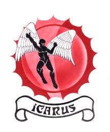

Setup help
Get your tools ready
Everything on Silicon From Scratch runs on free, open-source tools. Here's how to get them installed so you can simulate your designs and watch them run, cycle by cycle.

Simulation & waveforms
Installing Icarus Verilog and GTKWave
Icarus Verilog compiles and simulates your Verilog, and GTKWave lets you open the resulting waveform traces to watch signals change over time. On Windows the good news is that they come together: the official Icarus Verilog installer bundles GTKWave, so a single download gets you both.
- Open the official Icarus Verilog download page for Windows and grab the latest installer: Download from bleyer.org
-
Under Download, grab the latest installer — the file
ending in
.exe(for exampleiverilog-v12-...-x64_setup.exe). - Run the installer. It includes both Icarus Verilog and GTKWave, so there's no separate GTKWave download to chase down.
-
On the components screen, keep the defaults and make sure the option
to add the executables to your PATH is checked — that's
what lets you run
iverilogandgtkwavefrom any terminal. - Finish the installer, then open a new PowerShell window and confirm everything is in place.
# check that both tools are on your PATH
iverilog -V
gtkwave --versionOn macOS or Linux instead?
The Windows bundle is the simplest path, but the same tools are a package manager away elsewhere:
# macOS (Homebrew)
brew install icarus-verilog
brew install --cask gtkwave
# Debian / Ubuntu Linux
sudo apt install iverilog gtkwaveOnce you're set up
Start building.
With the tools installed, you're ready to compile a design, run its testbench, and open the waveform. The ALU is the place to begin.